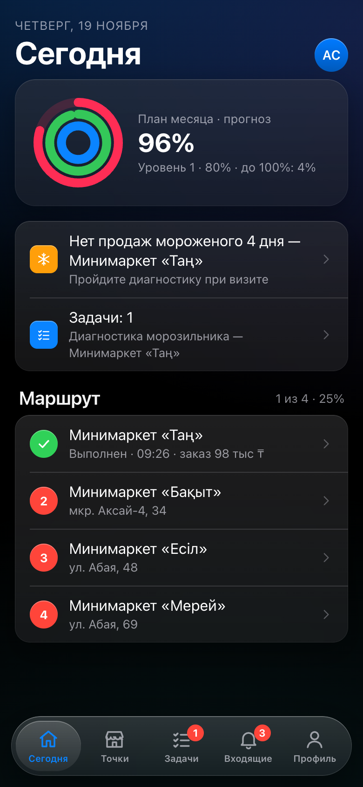

B2B SaaS · Retail execution · FMCG
DairyHub
Находит, почему падают продажи, и отдаёт задачу тому, кто может это исправить
Платформа для молочных компаний, которая объединяет торговых представителей, склад, бухгалтерию и руководителей. Вместо отчётов «кто виноват» компания получает причину и исполнителя.
✅ Работающий продукт онлайн
🧪 20 автотестов движка правил
🚀 Запрос: 30 млн ₸ на масштабирование

Хакатон · бизнес-кейс · 20261 / 10